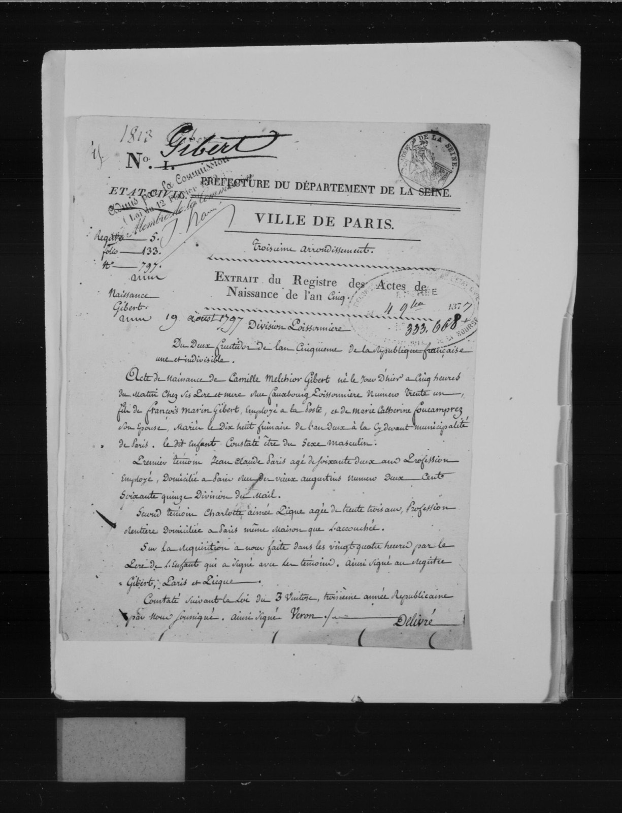

Acte d'état civil
Acte de naissance reconstitué de Camille Melchior Gibert, 2 fructidor an V (extrait délivré le 19/05/1808, pièces de reconstitution)
Ce document établit
- Camille Melchior Gibert naît le 1er fructidor an V (18 août 1797) à 5 h du matin, rue du Faubourg-Poissonnière n° 31, 3e arrondissement ancien de Paris (division Poissonnière) vérifié A0511
« « Acte de naissance de Camille Melchior Gibert né le jour d'hier à cinq heures du matin chez ses père et mère rue Faubourg Poissonnière numéro trente un » »
- Camille Melchior est fils de François Marin Gibert, « employé à la Poste », et de Marie Catherine Foucamprez, son épouse vérifié A0512
« « fils de François Marin Gibert, employé à la Poste, et de Marie Catherine Foucamprez son épouse » »
- Marin François Gibert et Marie Catherine Foucamprez se sont mariés le 18 frimaire an II (8 décembre 1793) « à la ci-devant municipalité de Paris » partiellement vérifié A0513
« « mariés le dix-huit frimaire de l'an deux à la ci-devant municipalité de Paris » »
- Témoins de la naissance de 1797 : Jean Claude Paris, 62 ans, employé, domicilié rue des Vieux-Augustins n° 275 (division du Mail) ; Charlotte Aimée Lique [?], 33 ans, rentière, domiciliée dans la maison de l'accouchée vérifié A0514
« « Jean Claude Paris âgé de soixante deux ans profession employé » ; « Charlotte Aimée Lique âgée de trente trois ans, profession rentière » »
Lire la transcription intégrale : Transcriptions — session navigateur intégré (02/11/2026) →
Personnes concernées
Extrait de la seconde minute ; transcription T03